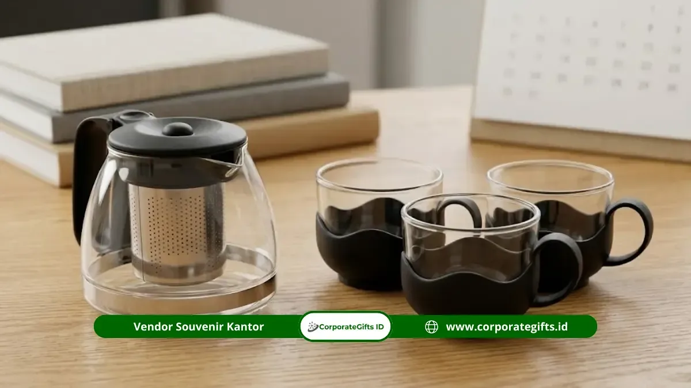

Corporate Gifts ID - Momen tepat pemberian souvenir tea set kantor adalah saat perayaan ulang tahun perusahaan, penghargaan masa kerja karyawan, penyambutan klien baru, dan penutupan kerja sama proyek, karena setiap momen tersebut membutuhkan hadiah yang berkesan formal sekaligus personal.
Pemilihan momen yang tepat membuat souvenir tea set kantor lebih bermakna dibanding sekadar dibagikan tanpa konteks acara. Ketepatan momen turut menentukan seberapa besar dampak souvenir terhadap hubungan kerja, baik dengan karyawan internal maupun mitra eksternal.
- Cocok untuk acara internal seperti gathering dan penganugerahan masa bakti karyawan.
- Sangat berkelas untuk acara eksternal seperti kunjungan klien penting dan seremoni MoU.
- Sering diberikan saat ulang tahun perusahaan sebagai simbol apresiasi loyalitas.
- Dapat menjadi hadiah penutup proyek kerja sama lintas divisi yang fungsional dan berkesan.
- Pemilihan momentum yang tepat melipatgandakan perceived value cenderamata.
Kapan Waktu Tepat Memberikan Souvenir Tea Set Kantor?
Waktu tepat memberikan souvenir tea set kantor adalah pada acara resmi perusahaan yang membutuhkan simbol apresiasi, seperti perayaan pencapaian target, ulang tahun perusahaan, dan pertemuan bisnis penting.
1. Menyesuaikan dengan Tingkat Formalitas Acara
Tea set cocok untuk acara dengan tingkat formalitas sedang hingga tinggi karena tampilannya yang elegan namun tidak berlebihan, sehingga sesuai untuk berbagai jenis acara korporat. Set cangkir keramik atau porselen berlogo mampu menghadirkan nuansa prestisius di ruang rapat maupun ruang kerja eksekutif.
2. Mempertimbangkan Jadwal Produksi Sebelum Acara
Pemesanan souvenir custom logo membutuhkan waktu produksi tertentu, sehingga penting menentukan momen pemberian jauh hari sebelum acara agar proses mockup digital, cetak decal tahan panas, dan pengemasan hardbox berjalan lancar. Simak juga ulasan koleksi souvenir VIP premium untuk klien perusahaan.
Acara Internal Apa Saja yang Cocok untuk Souvenir Tea Set Kantor?
Acara internal yang cocok untuk souvenir tea set kantor meliputi company gathering tahunan, penghargaan masa kerja karyawan, dan perayaan pencapaian target target bisnis perusahaan.
1. Gathering dan Perayaan Tahunan Perusahaan
Pada acara gathering tahunan, tea set sering dipilih sebagai hadiah apresiasi yang mencerminkan kebersamaan tim sekaligus memberi kesan elegan dibanding souvenir standar lainnya. Tradisi minum teh bersama melambangkan keharmonisan dan komunikasi terbuka di lingkungan kerja.
2. Penghargaan Masa Kerja dan Prestasi Karyawan
Souvenir tea set kantor kerap diberikan sebagai bentuk penghargaan atas loyalitas masa kerja atau pencapaian target tertentu, karena kesannya yang personal dan bernilai abadi. Anda juga bisa membaca inspirasi perpisahan di ulasan souvenir pisah sambut yang berkesan untuk kantor.
Berdasarkan pengetahuan umum industri gifting korporat, pemberian merchandise pada momen penghargaan kerja umumnya lebih diingat penerima dibanding pemberian rutin tanpa konteks acara, karena keterkaitan emosional dengan pencapaian yang dirayakan.

Kombinasi tea set keramik eksklusif dengan hardbox berpita emas untuk apresiasi relasi bisnis dan pimpinan.
Acara Eksternal Apa Saja yang Cocok untuk Souvenir Tea Set Kantor?
Acara eksternal yang cocok untuk souvenir tea set kantor meliputi pertemuan bisnis dengan klien, penandatanganan nota kesepahaman (MoU), dan kunjungan kerja dari delegasi mitra perusahaan.
1. Pertemuan Bisnis dan Penandatanganan Kontrak
Pada momen penandatanganan kontrak, tea set sering dipilih sebagai simbol dimulainya hubungan kerja sama yang formal namun tetap hangat kesannya bagi kedua belah pihak. Hadiah ini memperlihatkan sambutan tulus dan penghormatan tinggi tuan rumah.
2. Kunjungan Kerja dari Mitra atau Instansi Lain
Ketika menerima kunjungan kerja dari instansi atau perusahaan mitra, tea set dapat diberikan sebagai cinderamata diplomatik yang mencerminkan keramahan sekaligus profesionalisme. Pelajari juga standar seremonial pada momen penting pemberian souvenir mitra kampus dan institusi.
Matriks Panduan Momen dan Spesifikasi Souvenir Tea Set
Berikut rangkuman rekomendasi model tea set, teknik kustomisasi, dan estimasi lead time pengerjaan sesuai kebutuhan acara kantor Anda:
| Kategori Acara | Rekomendasi Tea Set | Teknik Personalisasi Logo | Estimasi Waktu Produksi |
|---|---|---|---|
| HUT Perusahaan (Anniversary) | Tea Set Keramik 6 Cangkir + 1 Teko + Tray Kayu | Decal Sablon Emas (Gold Glaze Firing) | 14 - 21 Hari Kerja |
| Penghargaan Masa Kerja Karyawan | Set Cangkir Porselen Ganda + Sendok Gold Plated | Laser Engraving Nama + Print Logo Perusahaan | 7 - 12 Hari Kerja |
| Penandatanganan Kontrak Klien VIP | Tea Set Kaca Tempered Tahan Panas + Infuser Stainless | Sablon Presisi High-Resolution + Box Suede | 10 - 15 Hari Kerja |
| Penutupan Proyek & Serah Terima | Set Cangkir Keramik Stoneware Minimalis Modern | Emboss Logo Kotak + Custom Greeting Card | 7 - 10 Hari Kerja |
Apakah Souvenir Tea Set Kantor Cocok untuk Penutupan Proyek?
Souvenir tea set kantor sangat cocok untuk penutupan proyek karena dapat menjadi simbol apresiasi atas kerja sama yang telah berjalan sekaligus kenang-kenangan yang tetap terpakai setelah proyek selesai.
1. Simbol Apresiasi atas Kerja Sama Tim Lintas Perusahaan
Pemberian tea set pada akhir proyek menunjukkan penghargaan terhadap kontribusi seluruh pihak yang terlibat, baik dari internal perusahaan maupun konsultan serta kontraktor eksternal.
2. Kenang-Kenangan yang Tetap Fungsional Setelah Proyek Selesai
Berbeda dengan plakat atau sertifikat yang hanya dipajang di lemari dinding, tea set tetap dipakai untuk minum teh atau kopi sehari-hari, sehingga kenangan kerja sama tersebut terus hadir dalam aktivitas penerima.
Apakah Musim atau Periode Tertentu Memengaruhi Momen Pemberian?
Musim atau periode tertentu dalam kalender bisnis dapat memengaruhi pola pemesanan souvenir tea set kantor di Indonesia, terutama menjelang tutup buku tahunan.
1. Periode Akhir Tahun sebagai Momen Populer
Menjelang akhir tahun (November - Desember), banyak perusahaan menggelar acara evaluasi tahunan (Raker) sekaligus perayaan pencapaian target, sehingga permintaan souvenir korporat termasuk tea set cenderung meningkat signifikan pada periode ini.
2. Periode Awal Tahun untuk Menyambut Proyek Baru
Selain akhir tahun, awal tahun (Januari - Februari) juga sering dimanfaatkan perusahaan untuk kick-off meeting dan menyambut proyek atau kerja sama baru, sehingga souvenir tea set kantor turut dipakai sebagai simbol semangat memulai lembaran baru yang segar.
Bagaimana Menentukan Jumlah Souvenir Sesuai Momen Acara?
Menentukan jumlah souvenir tea set kantor sesuai momen acara dilakukan dengan menghitung jumlah penerima secara pasti, baik dari sisi internal karyawan maupun eksternal klien yang diundang pada acara tersebut.
1. Menghitung Kebutuhan untuk Acara Internal
Untuk acara internal, jumlah souvenir dapat dihitung berdasarkan data valid HRD mengenai karyawan yang berhak menerima apresiasi, misalnya karyawan dengan masa kerja tertentu atau pencapaian target khusus pada periode berjalan.
2. Menghitung Kebutuhan untuk Acara Eksternal dengan Klien
Untuk acara eksternal, jumlah souvenir sebaiknya disesuaikan dengan daftar tamu undangan resmi, termasuk cadangan 5-10% untuk mengantisipasi delegasi tambahan yang hadir pada hari acara berlangsung. Untuk pengajuan penawaran harga resmi, Anda dapat mengisi formulir permintaan penawaran harga (RFQ).
Pertanyaan Seputar Souvenir Tea Set Kantor (FAQ)
Kesimpulan
Ketepatan momen pemberian souvenir tea set kantor menentukan seberapa besar makna dan apresiasi yang dirasakan oleh penerima, baik pada perayaan internal korporat maupun agenda kemitraan strategis eksternal.
Perencanaan jadwal produksi yang matang menjadi kunci utama agar paket souvenir siap tepat waktu sebelum hari H acara. Perusahaan yang ingin memastikan kualitas tea set porselen premium, kustomisasi logo presisi, dan kemasan hardbox mewah dapat berkonsultasi langsung dengan tim Corporate Gifts ID.
Disclaimer: Pilihan set keramik, teko porselen, mug kustom, dan finishing gift box eksklusif dapat disesuaikan dengan identitas brand serta anggaran perusahaan melalui layanan kustomisasi CorporateGifts.ID.


.webp)